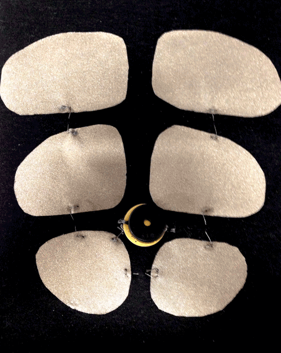

Keyboard Six Pack
This is a project for a wearables class at NYU. For this assignment we explored sound. I started thinking about instruments and how it would be fun to play an instrument on my body. I had previously made a couple keyboards using Arduino and a piezo speaker. I started thinking about how I could recreate this as a wearable.
I thought it would be fun to tap on my belly to produce music and then it occurred to me that I could create a six-pack of buttons that would produce different sounds. My Floridian upbringing has taught me that people love to show off their six-packs at the beach, so I imagine this instrument would be a hit at beach parties. A marketable version would be water-proof, SPF 30, and sound like steel drums.
Fabrication
I started by drawing some abs on a mannequin to make a pattern.

Then I cut them out of muslin and tried them on myself. Oops, this lo-fi selfie almost make them look real!
I traced them onto some fusible interfacing web so I could attach the conductive fabric to some jersey fabric. I also attached conductive fabric to the muslin. These would act as the two sides on my fabric buttons.

To make my fabric buttons I cut holes into foam and placed it in between conductive fabric. I had to resew the connections a few times, because I initially got my circuitry mixed up. I learned a lot about sewing with resistors.
I soldered the piezo and some metal snaps to a breadboard so it could be removable. A future version would need to be water-proof to be safe near the ocean and pool, and at the very least have detachable parts so it could be washed.

The current version uses an Arduino Uno and has to be plugged in, but it would not be difficult to recreate it with a Flora and a battery.

I created a stretchy green outer layer with extra foam for more definition based on this tutorial for a child’s Halloween costume. I kinda look like a Ninja Turtle.